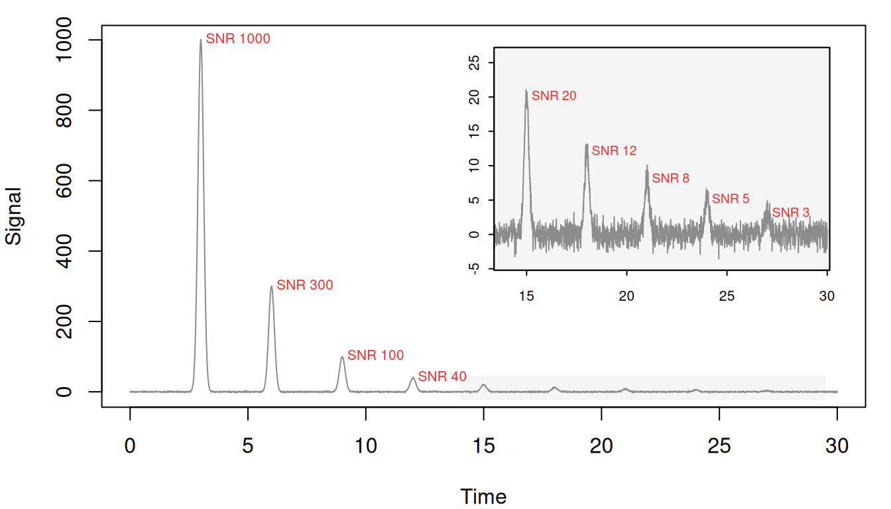
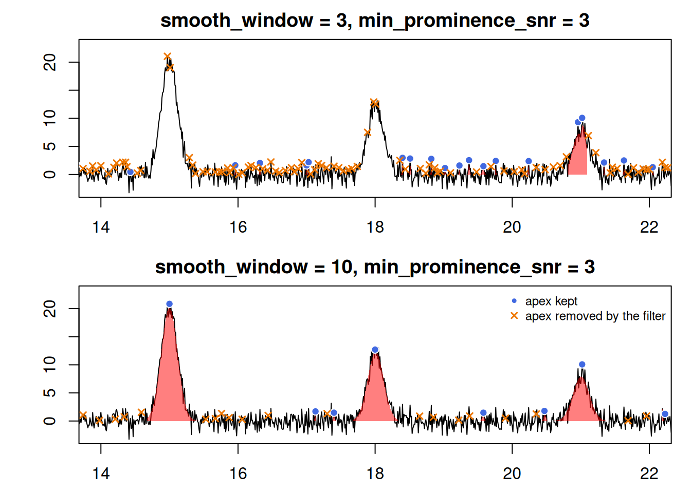
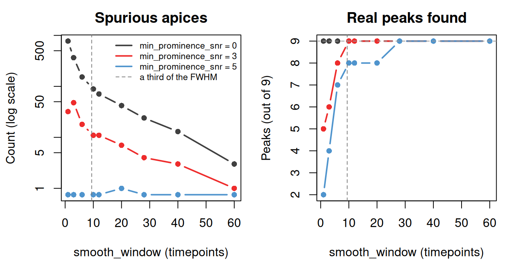
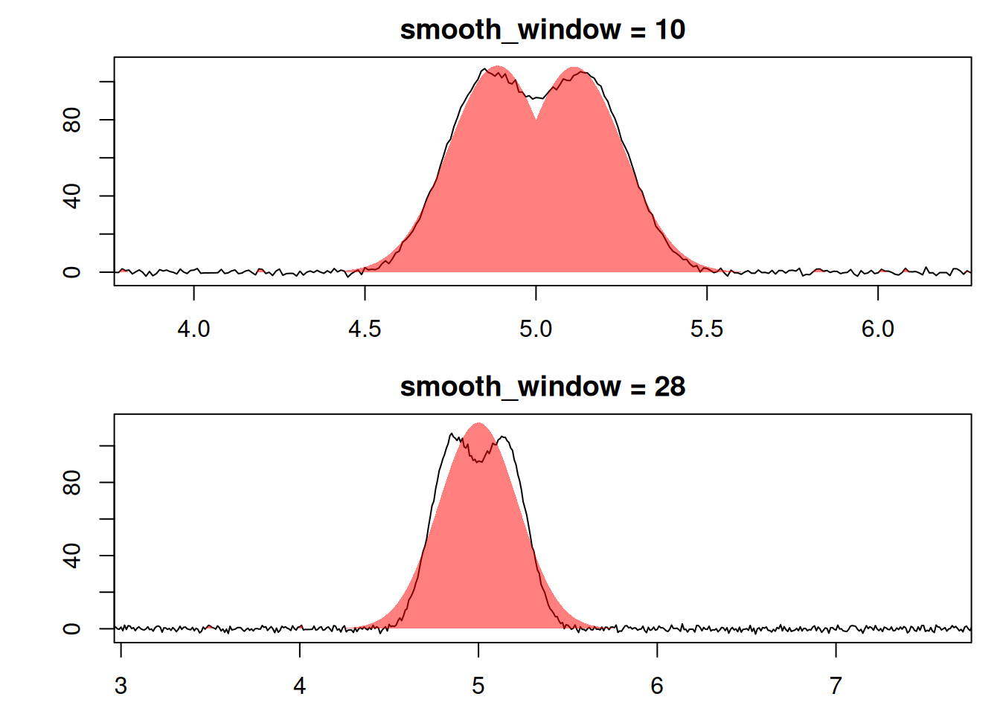

Peak finding in chromatographR places an apex wherever the first derivative of the signal changes from positive to negative. Noise makes the derivative change sign at every small wiggle, so find_peaks() smooths the signal first; smooth_window sets the width of that smoothing, in timepoints.
Three filters are available to remove small or spurious peaks: min_amplitude, min_curvature and min_prominence_snr. The first two are in the instrument’s units. The third discards apices that rise less than that many noise standard deviations above the higher of the two valleys beside them. All three default to 0.
This article covers smooth_window and min_prominence_snr. The prominence filter is the only one measured against the noise, so one value can serve across datasets. It needs baseline-corrected data, though: find_peaks() estimates the noise from the timepoints outside peaks, and baseline drift inflates that estimate. Too narrow a window can also make it discard real peaks. See find_peaks for the other two filters.
The recommended workflow is:
- Measure your peak widths.
- Set
smooth_windowto about a third of a typical width. - Use
filter_peaks()to remove detections narrower or wider than any real peak.
The sections below test that advice on simulated traces whose true peaks are known, and the last applies it to the example data Sa_pr.
A trace with known peaks
The next three sections use a simulated trace: nine gaussian peaks, each 28 timepoints wide at half height, with heights from 1000 down to 3 against noise of standard deviation 1.
Simulate the trace
set.seed(1)
tt <- seq(0, 30, by = 0.01)
ctr <- c(3, 6, 9, 12, 15, 18, 21, 24, 27)
hgt <- c(1000, 300, 100, 40, 20, 12, 8, 5, 3)
y <- rep(0, length(tt))
for (i in seq_along(ctr)) {
y <- y + hgt[i] * exp(-(tt - ctr[i])^2 / (2 * 0.12^2))
}
y <- y + rnorm(length(tt))
small <- hgt <= 20
zoom <- list(x = c(14, 29.5), y = c(-4, 26))
par(mar = c(4, 4, 1, 1))
plot(tt, y, type = "n", xlab = "Time", ylab = "Signal")
rect(zoom$x[1], -25, zoom$x[2], 45, col = "grey96", border = NA)
lines(tt, y, col = "grey55")
text(ctr[!small], hgt[!small], paste("SNR", hgt[!small]), pos = 4,
offset = 0.2, cex = 0.65, col = "firebrick2")
inset <- c(grconvertX(c(13.5, 30), "user", "ndc"),
grconvertY(c(230, 1000), "user", "ndc"))
par(fig = inset, new = TRUE, mar = c(1.6, 1.8, 0.3, 0.3), cex.axis = 0.65,
mgp = c(3, 0.4, 0), tcl = -0.2)
plot(tt, y, type = "n", xlim = zoom$x, ylim = zoom$y, xlab = "", ylab = "")
rect(par("usr")[1], par("usr")[3], par("usr")[2], par("usr")[4],
col = "grey96", border = NA)
lines(tt, y, col = "grey55")
box()
text(ctr[small], hgt[small], paste("SNR", hgt[small]), pos = 4,
offset = 0.2, cex = 0.6, col = "firebrick2")
An apex counts as found when it lands within 0.05 of a true center, and as spurious otherwise. The grid runs find_peaks() at nine windows and three prominence thresholds:
Scoring function
score <- function(p, tol = 0.05){
if (!nrow(p)) return(c(found = 0, spurious = 0))
d <- tt[p$pos]
c(found = sum(vapply(ctr, function(c0) any(abs(d - c0) <= tol), logical(1))),
spurious = sum(!vapply(d, function(x) any(abs(ctr - x) <= tol), logical(1))))
}
found_at <- function(w, k) with(res, found[smooth_window == w & min_prominence_snr == k])
spurious_at <- function(w, k) with(res, spurious[smooth_window == w & min_prominence_snr == k])
first_all <- function(k) with(res, min(smooth_window[min_prominence_snr == k & found == 9]))
windows <- c(1, 3, 6, 10, 12, 20, 28, 40, 60)
snrs <- c(0, 3, 5)
grid <- expand.grid(smooth_window = windows, min_prominence_snr = snrs)
scored <- do.call(rbind, Map(function(w, k) {
p <- find_peaks(y, smooth_window = w, min_prominence_snr = k)
score(p)
}, grid$smooth_window, grid$min_prominence_snr))
res <- cbind(grid, scored)The counts are plotted at the end of the next section. At the three narrowest windows, which are under a third of the peak width, find_peaks() also warns that the window is too narrow; those warnings are hidden on this page.
Narrow windows let noise through and split real peaks
Noise can split a small peak into several apices, each rising only a little above the notch beside it, so min_prominence_snr discards the pieces along with the noise and the peak is lost. To see this, wrap the trace as a one-sample chromatogram and pass it to get_peaks() at windows of 3 and 10 timepoints, with min_prominence_snr = 3:
Plot the fitted peaks and the apices
par(mfrow = c(2, 1), mar = c(2.5, 4, 2, 1))
for (i in 1:2) {
w <- c(3, 10)[i]
all <- find_peaks(y, smooth_window = w)$pos
kept <- find_peaks(y, smooth_window = w, min_prominence_snr = 3)$pos
gone <- setdiff(all, kept)
plot(narrow[[i]], chrom_list = sim, xlim = c(14, 22), ylim = c(-3, 23),
main = sprintf("smooth_window = %d, min_prominence_snr = 3", w))
points(tt[kept], y[kept], pch = 21, cex = 1, bg = "royalblue", col = "white")
points(tt[gone], y[gone], pch = 4, cex = 0.8, lwd = 1.5, col = "darkorange2")
}
legend("topright", c("apex kept", "apex removed by the filter"),
pch = c(21, 4), pt.bg = c("royalblue", NA), col = c("white", "darkorange2"),
pt.lwd = c(1, 1.5), bty = "n", cex = 0.75)
min_prominence_snr = 3. Filled points mark apices that pass the prominence filter, crosses those it removes.Between 14 and 22 minutes the 3-timepoint window fits 1 of the three peaks. Noise splits the SNR-20 peak into 2 apices and the SNR-12 peak into 3, each rising at most 2.6 above the notch beside it. Every fragment falls below the threshold of 3, so the filter removes them all and nothing is left to fit. The 10-timepoint window keeps each summit in one piece and fits all 3. At either window a few noise apices also clear the threshold.
The same happens to every small peak on the trace. The table gives, for each true peak, the number of apices within 0.05 of its center and the largest of their prominences:
Prominence of the apices near each true peak
summits <- data.frame(height = hgt, w3 = peak_prominence(3),
w28 = peak_prominence(28))
summits
#> height w3.apices w3.prominence w28.apices w28.prominence
#> 1 1000 1 1001.954703 1 1003.482275
#> 2 300 1 300.931797 1 301.835621
#> 3 100 1 99.267156 1 100.782965
#> 4 40 1 42.144718 1 39.891632
#> 5 20 2 2.556578 1 23.250991
#> 6 12 2 1.709688 1 14.758962
#> 7 8 2 3.426058 1 9.999787
#> 8 5 2 2.017186 1 7.530459
#> 9 3 2 3.262023 1 7.212463The four tallest peaks keep one apex and their full prominence at either window. At 3 timepoints the five small ones split in two, and their prominence falls to between 1.7 and 3.4, against a noise level of about 1. Height does not decide which of them survive: the SNR-3 peak keeps a prominence of 3.3, while the SNR-12 peak falls to 1.7.
Across every window in the grid, the counts show the trade-off. Without the prominence filter, spurious apices fall from 773 at a one-timepoint window to 3 at 60, and all nine real peaks survive every window.
Plot the counts
cols <- c("grey25", "firebrick2", "steelblue3")
advised <- 2.355 * 0.12 / 0.01 / 3
spur <- matrix(res$spurious, nrow = length(windows))
fnd <- matrix(res$found, nrow = length(windows))
par(mfrow = c(1, 2), mar = c(4.2, 4.2, 2.4, 1))
matplot(windows, pmax(spur, 0.75), type = "b", log = "y", col = cols,
pch = 16, lty = 1, lwd = 2,
xlab = "smooth_window (timepoints)", ylab = "Count (log scale)",
main = "Spurious apices")
abline(v = advised, lty = 2, col = "grey50")
legend("topright", c(paste("min_prominence_snr =", snrs), "a third of the FWHM"),
col = c(cols, "grey50"), lwd = c(2, 2, 2, 1), lty = c(1, 1, 1, 2),
bty = "n", cex = 0.72)
matplot(windows, fnd, type = "b", col = cols, pch = 16, lty = 1, lwd = 2,
xlab = "smooth_window (timepoints)", ylab = "Peaks (out of 9)",
main = "Real peaks found")
abline(v = advised, lty = 2, col = "grey50")
abline(h = 9, lty = 2, col = "grey60")
The filter removes spurious apices at any window, but at narrow windows it removes real peaks too. At 3 timepoints, min_prominence_snr = 3 finds 6 of the nine and = 5 finds 4. To keep all nine, = 3 needs a window of 10 timepoints and = 5 needs 28. At 10 timepoints, about a third of the peak width, = 3 keeps all nine and cuts the spurious apices from 89 to 11.
Filtering the noise that remains
At the recommended window, min_prominence_snr = 3 still leaves many small noisy peaks among the real ones. These can be removed after fitting using filter_peaks() using various criteria. The table below counts the fitted peaks that each criterion retains, using the 10-timepoint peak table derived from the 10-timepoint smoothing window:
Count the real and spurious fits
fit10 <- narrow[[2]]
count_fits <- function(p) {
rt <- data.frame(p[[1]][["1"]])$rt
real <- vapply(rt, function(r) any(abs(ctr - r) <= 0.05), logical(1))
setNames(c(sum(real), sum(!real)),
c(sprintf("real (of %d)", length(ctr)), "spurious"))
}
fits10 <- data.frame(fit10[[1]][["1"]])
fits10$real <- vapply(fits10$rt, function(r) any(abs(ctr - r) <= 0.05), logical(1))
r2_fit10 <- fit10
r2_fit10[[1]][["1"]] <- fit10[[1]][["1"]][fits10$r.squared >= 0.8, ]
rbind(
"none" = count_fits(fit10),
"min_fwhm = 0.1" = count_fits(filter_peaks(fit10, min_fwhm = 0.1)),
"window_limited = FALSE" = count_fits(filter_peaks(fit10, window_limited = FALSE)),
"min_height = 5" = count_fits(filter_peaks(fit10, min_height = 5)),
"converged = TRUE" = count_fits(filter_peaks(fit10, converged = TRUE)),
"r.squared >= 0.8" = count_fits(r2_fit10)
)
#> real (of 9) spurious
#> none 9 11
#> min_fwhm = 0.1 9 0
#> window_limited = FALSE 9 6
#> min_height = 5 8 1
#> converged = TRUE 9 11
#> r.squared >= 0.8 7 0Width separates noise from peaks best. The spurious fits are at most 0.035 minutes wide and the real peaks at least 0.26, so min_fwhm = 0.1 removes all the noise and keeps all nine peaks. The other criteria do worse:
-
window_limited = FALSEremoves only the fits pinned at one timepoint, the narrowest width a fit can report. -
min_heightis in instrument units, and any cutoff that removes the noise here also removes the smallest real peak. - An
r.squaredcutoff removes the noise but also the two smallest real peaks, whose fits are noisy. -
convergeddoesn’t separate them at all.
Wide windows merge close peaks
A window that is too narrow fills the peak list with noise, which is easy to see. A window that is too wide can merge neighboring peaks with no warning. In the figure below, two overlapping peaks are shown whose apices sit 0.30 minutes apart (about one peak width).
Simulate the pair and fit it
set.seed(1)
t2 <- seq(0, 10, by = 0.01)
y2 <- 100 * exp(-(t2 - 4.85)^2 / (2 * 0.12^2)) +
100 * exp(-(t2 - 5.15)^2 / (2 * 0.12^2)) + rnorm(length(t2))
m2 <- matrix(y2, ncol = 1, dimnames = list(t2, "210"))
tidy_fit <- function(w) {
fp <- fit_peaks(m2, lambda = "210", smooth_window = w, fit = "gaussian")
near <- fp[abs(fp$rt - 500) < 60 & fp$height > 50, ]
data.frame(smooth_window = w, peaks = nrow(near), widest_FWHM = round(max(near$FWHM)),
lowest_r.squared = round(min(near$r.squared), 2))
}Fit and plot the pair at both windows
pair <- list(pair = matrix(y2, ncol = 1, dimnames = list(t2, "1")))
par(mfrow = c(2, 1), mar = c(2.5, 4, 2, 1))
for (w in c(10, 28)) {
pks_pair <- get_peaks(pair, lambdas = "1", fit = "gaussian",
smooth_window = w, cl = 1, show_progress = FALSE)
plot(pks_pair, chrom_list = pair, targets = 5, tol = 0.4,
main = paste("smooth_window =", w))
}
With a 10-point smoothing window, the two fitted shapes follow the trace. With a 28-point smoothing window, a single broad shape is fitted to the whole region, missing both summits. The fitted values show the same thing, at two more window sizes. Each row gives the number of fitted peaks that are at least half the true height, the widest of their FWHMs (each true peak is 28 timepoints wide), and the lowest r.squared:
Windows of 3 and 10 fit both peaks. At windows of 28 and 40, fit_peaks() reports one peak where there are two. The fit still looks good, with an r.squared of 0.96, but its FWHM of 52 timepoints is nearly twice the true width of 28.
Application to real data
data(Sa_pr)
pks <- get_peaks(Sa_pr, lambdas = 210, cl = 1, show_progress = FALSE)
widths <- do.call(rbind, lapply(pks, function(x) data.frame(x[["210"]])))
dt <- get_time_resolution(Sa_pr, unit = "min")
median(widths$FWHM, na.rm = TRUE) / dt
#> [1] 6.068966FWHM is in minutes but smooth_window counts timepoints, so the last line divides by the sampling interval: a typical Sa_pr peak spans 6 timepoints, which puts smooth_window at about 2. Real widths are messy at both ends (here the narrowest detections are one-timepoint noise fits and the widest are low, broad humps), so plot the extremes before setting min_fwhm and max_fwhm, and don’t take them from quantiles.